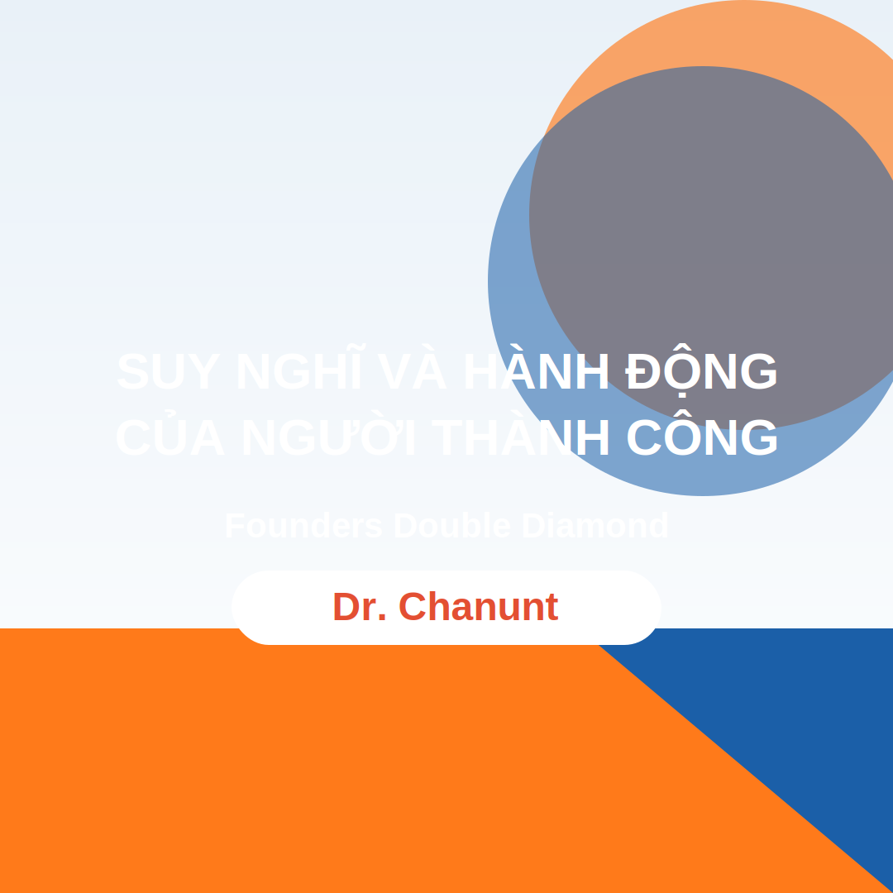

Suy nghĩ và hành động của người thành công
Hôm nay mình nghe câu chuyện của một nhà phân phối người Thái, nơi Amway đã phát triển hơn 35 năm nên có rất nhiều bài học hay. Thành công của ông Chanunt được tóm gọn như sau:
- Sau 10 năm làm Amway doanh số 500 triệu Baht.
- Sau 13 năm làm Amway doanh số 1 tỷ Baht.
- Sau 18 năm làm Amway doanh số 2 tỷ Baht (khoảng 1.600 tỷ đồng). Hiện tại ông là Founders Double Diamond.
Ông Chanunt vốn là một bác sĩ. Cuộc đời ông thay đổi khi ông tự hỏi: “Không lẽ mình cứ sáng ở bệnh viện, chiều đến phòng mạch, tối về nhà, rồi đến khi già?”
Những chia sẻ mình tâm đắc:
- “Thành công có ý nghĩa nhất với tôi đó là được là chính mình, nhận thấy giá trị của bản thân, và chia sẻ được cho nhiều người khác.”
- “Nếu hôm nay mình biết mình không thành công vì lý do gì, thì ngày sau mình còn có cơ hội thành công. Còn nếu không biết vì sao mình không thành công thì kiểu gì cũng không thể thành công được.”
- Khi ông đưa sản phẩm Amway cho mẹ, mẹ nói: “Amway hả, được, đi ra ngoài coi thế giới bên ngoài đi, đừng chỉ biết có nghề bác sĩ.”
3 điểm ông hướng dẫn:
- Tính cách của người thành công. Người thành công nghĩ khác và làm ngay, không trì hoãn. Họ học và phát triển bản thân suốt đời để ngày càng tốt hơn.
- Thông minh lựa chọn. Người thành công chọn công việc tạo ra kết quả xứng đáng, sẵn sàng cực một lần để đổi lấy cuộc sống tốt hơn.
- Đặt mục tiêu. Người thành công xem mục tiêu là động lực, còn người chưa thành công thì coi mục tiêu như áp lực.
Sự thành công cần gì?
- Làm cho được việc.
- Làm cho được việc mỗi ngày.
- Làm mỗi ngày chưa đủ mà phải làm cho tốt hơn.
- Làm cho tốt hơn chưa đủ mà còn phải sáng tạo.
- Và quan trọng là phải làm vui vẻ và hạnh phúc.
Trong thế giới của người thành công là sự cố gắng, và họ sẽ cố gắng cho tới khi được thì thôi.
Nguồn hình: Ảnh minh họa từ nội dung buổi chia sẻ.